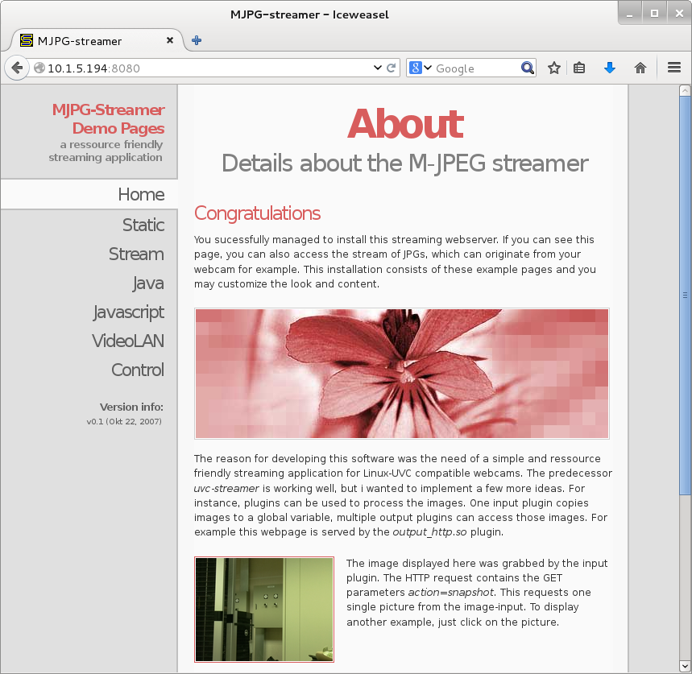

Camera Web Streaming
Raspberry Pi Camera를 Web에서 볼 수 있도록 설정해 본다. 물론 Camera는 설치되어 있어야 한다.
기본적인 설정은 다음 홈페이지를 따랐다.
http://www.rasplay.org/?p=7174
우선 필요한 Library를 설치한다.
pi@raspberrypi ~ $ sudo apt-get install git cmake libjpeg8-dev imagemagick -y
다음 videodev.h 헤더파일을 videodev2.h파일로 링크한다.
pi@raspberrypi ~ $ sudo ln -s /usr/include/linux/videodev2.h /usr/include/linux/videodev.h
mjpg-streamer를 다운 받는데 다음 2곳에서 받을 수 있다.
https://github.com/jacksonliam/mjpg-streamer
https://github.com/liamfraser/mjpg-streamer
테스트 결과 liamfraser에 있는 코드는 영상의 frame rate(fps)을 조정 할 수 없으며 조건에 따라 fps가 상당히 떨어지는
문제가 있다. 따라서 jacksonliam에서 코드를 다운 받는다.
pi@raspberrypi ~ $ git clone https://github.com/jacksonliam/mjpg-streamer
다운 받은 코드를 make 한다.
pi@raspberrypi ~ $ cd mjpg-streamer/mjpg-streamer-experimental
pi@raspberrypi ~ /mjpg-streamer/mjpg-streamer-experimental $ make
make가 완료되면 다음과 같은 실행 스크립트를 만든다.
mjpg.sh
export STREAMER_PATH=$HOME/mjpg-streamer/mjpg-streamer-experimental
export LD_LIBRARY_PATH=$STREAMER_PATH
$STREAMER_PATH/mjpg_streamer -i "input_raspicam.so -x 640 -y 480 -fps 30" -o "output_http.so -w $STREAMER_PATH/www"
스크립트를 실행 한다.
pi@raspberrypi ~ $ sh mjpg.sh
MJPG Streamer Version: svn rev:
DBG(/home/pi/mjpg-streamer/mjpg-streamer-experimental/plugins/input_raspicam/input_raspicam.c, input_init(), 118): argv[0]=raspicam
input plugin
DBG(/home/pi/mjpg-streamer/mjpg-streamer-experimental/plugins/input_raspicam/input_raspicam.c, input_init(), 118): argv[1]=-x
DBG(/home/pi/mjpg-streamer/mjpg-streamer-experimental/plugins/input_raspicam/input_raspicam.c, input_init(), 118): argv[2]=640
DBG(/home/pi/mjpg-streamer/mjpg-streamer-experimental/plugins/input_raspicam/input_raspicam.c, input_init(), 118): argv[3]=-y
DBG(/home/pi/mjpg-streamer/mjpg-streamer-experimental/plugins/input_raspicam/input_raspicam.c, input_init(), 118): argv[4]=480
DBG(/home/pi/mjpg-streamer/mjpg-streamer-experimental/plugins/input_raspicam/input_raspicam.c, input_init(), 118): argv[5]=-fps
DBG(/home/pi/mjpg-streamer/mjpg-streamer-experimental/plugins/input_raspicam/input_raspicam.c, input_init(), 118): argv[6]=30
DBG(/home/pi/mjpg-streamer/mjpg-streamer-experimental/plugins/input_raspicam/input_raspicam.c, input_init(), 175): case 2,3
DBG(/home/pi/mjpg-streamer/mjpg-streamer-experimental/plugins/input_raspicam/input_raspicam.c, input_init(), 181): case 4,5
DBG(/home/pi/mjpg-streamer/mjpg-streamer-experimental/plugins/input_raspicam/input_raspicam.c, input_init(), 187): case 6, 7
i: fps.............: 30
i: resolution........: 640 x 480
i: camera parameters..............:
Sharpness 0, Contrast 0, Brightness 50
Saturation 0, ISO 400, Video Stabilisation No, Exposure compensation 0
Exposure Mode 'auto', AWB Mode 'auto', Image Effect 'none'
Metering Mode 'average', Colour Effect Enabled No with U = 128, V = 128
Rotation 0, hflip No, vflip No
o: www-folder-path...: /home/pi/mjpg-streamer/mjpg-streamer-experimental/www/
o: HTTP TCP port.....: 8080
o: username:password.: disabled
o: commands..........: enabled
i: Starting Camera
DBG(/home/pi/mjpg-streamer/mjpg-streamer-experimental/plugins/input_raspicam/input_raspicam.c, worker_thread(), 553): Host init, starting mmal
stuff
DBG(/home/pi/mjpg-streamer/mjpg-streamer-experimental/plugins/input_raspicam/input_raspicam.c, worker_thread(), 681): Camera enabled, creating
encoder
Encoder Buffer Size 81920
DBG(/home/pi/mjpg-streamer/mjpg-streamer-experimental/plugins/input_raspicam/input_raspicam.c, worker_thread(), 764): Encoder enabled, creating
pool and connecting ports
DBG(/home/pi/mjpg-streamer/mjpg-streamer-experimental/plugins/input_raspicam/input_raspicam.c, worker_thread(), 880): Starting video output
스크립트가 실행되면 다음 주소를 통해 웹으로 영상을 확인할 수 있다.
http://[IP Address]:8080

이미지 저장 하기
wget을 이용하며 Web Streaming으로 부터 이미지를 저장할 수 있다.
scwook@scwook: ~$ wget http://10.1.5.194:8080/?action=snapshot -O image.jpg
Script를 만들면 주기적으로 이미지를 저장할 수 있다. 다음은 2초 간격으로 이미지를 저장하는 script이다.
capture.sh
while :
do
DATE=$(date +"%Y-%m-%d_%H%M%S")
wget -nv http://10.1.5.194:8080/?action=snapshot -O ./camera/$DATE.jpg
sleep 2
done
camera 폴더를 만들고 script를 실행한다.
scwook@scwook: ~$ mkdir camera
scwook@scwook: ~$ sh capture.sh
동영상 만들기
mencoder를 이용하면 앞서 만든 여러장의 이미지를 하나의 Time-Lapse 동영상으로 만들 수 있다.
파일을 만들기 전에 우선 mencoder를 설치한다.
scwook@scwook: ~$ sudo aptitude install mencoder
동영상으로 만들 이미지 리스트를 stills.txt 파일로 dump 시킨다.
scwook@scwook: ~$ ls *.jpg > stills.txt
mencoder를 이용하여 이미지들을 동영상으로 변환 한다.
scwook@scwook: ~$ mencoder -nosound -ovc lavc -lavcopts vcodec=mpeg4:aspect=4/3:vbitrate=8000000 -vf scale=640:480 -o timelapse.avi -mf
type=jpeg:fps=24 mf://@stills.txt